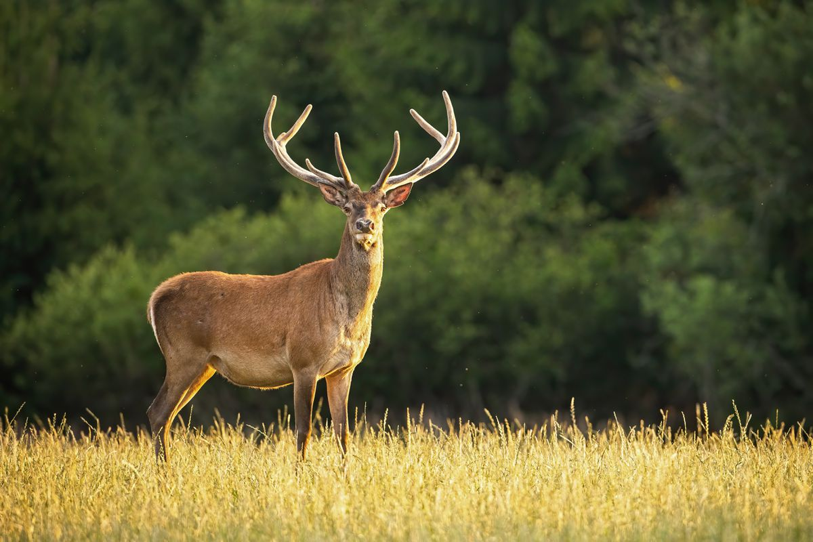

Deer or true deer
are hoofed ruminant mammals forming the family Cervidae. The two main groups of deer are the Cervinae, including the muntjac, the elk (wapiti), the red deer, the fallow deer, and the chital; and the Capreolinae, including the reindeer (caribou), the roe
deer, the mule deer, and the moose. Male deer of all species (except the Chinese water deer) as well as female reindeer, grow and shed new antlers each year. In this they differ from permanently horned antelope, which are part
of a different family (Bovidae) within the same order of even-toed ungulates (Artiodactyla).
